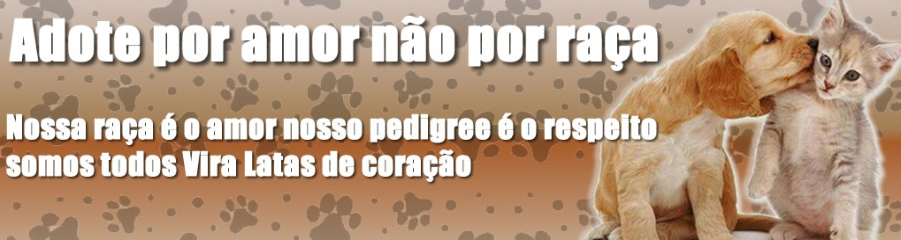
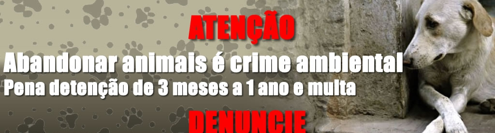
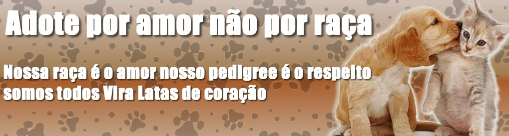
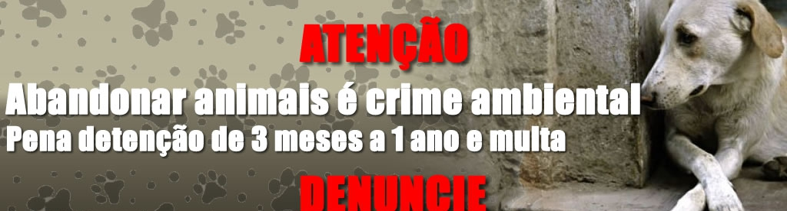

Ted
Dou-me bem com outros animais e sou um ótimo perfil para famílias com crianças ou idosos
AdotarA presença de um animal de estimação em casa traz fecilidade e bem estar.Bolinhas de pelo alegres, fofinhas e cheias de vida, grandes ou pequenas brancas, prestas, marrons ou amarelas, pulam e brincam o dia todo como se fossem brinquedinhos com energia infinita.
Dou-me bem com outros animais e sou um ótimo perfil para famílias com crianças ou idosos
Adotar
Eu tenho um comportamento calmo, sou muito brincalhão e bastante obediente.
Adotar
Sou um leãozinho branco, sou bonzinho,carinhoso e amoroso,adoro receber carinho
AdotarTenho um bigodinho charmoso, sou muito companheiro e calmo, gosto muito de brincar.
AdotarQuem disse que são só os peludinhos, frufruzentos que podem ser adotados? Veja alguns animais que também podem ser ótimas opções para serem amigos de estimação. É claro que existe uma infinidade, mas abaixo você vai encontrar alguns comuns, dentre os exóticos, que você realmente pode ter em casa.
Lindo psitacídeo nativo da Austrália e de outras partes do pacifico. Chegam 80 cm de altura e peso de 2 kg. Estes animais podem viver mais de 70 anos. Precisam de atenção.
Um macaquinho que chega a 10 cm de altura, está na classe dos exótico mais populares para se ter como pet. Animal que se desde pequeno é domesticado, vive numa boa com seu dono.
Existem várias espécies de coruja, símbolo de sabedoria, essa ave é um excelente animal de estimação, pois elas são fieis ao dono e apresentam um hábito muito tranquilo.
cachorro latindo alto
cachorro chorando
coruja fofa
 rua:Dr Nogueira Martins 114, Saúde, São Paulo-SP CEP: 04143-020
rua:Dr Nogueira Martins 114, Saúde, São Paulo-SP CEP: 04143-020

Telefone: (00) 00000-00000
 E-mail: seuemail@dominio.com
E-mail: seuemail@dominio.com